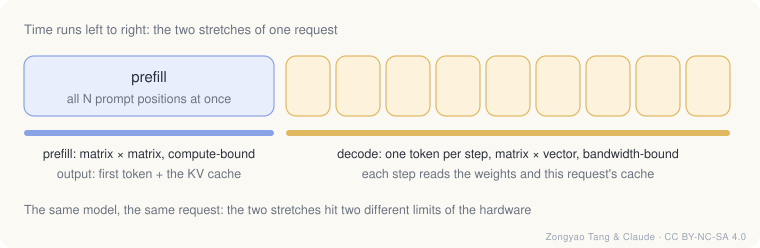
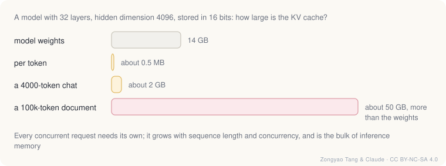
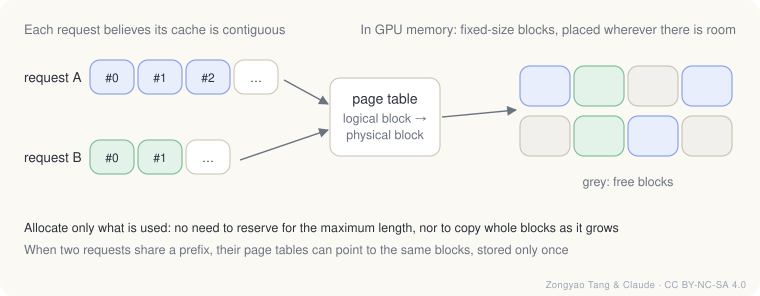

The thread: generating text has two phases, whose bottlenecks differ → in the decode phase a single request is very wasteful, and only batching many requests together is efficient → the ceiling on batching is set by one thing: the GPU memory the KV cache takes → so how this memory is managed becomes the core problem of an inference engine. This unit covers "how one request is computed, and how many requests one GPU can hold"; how to arrange many requests arriving at once is left to 9.3.
Part 9 · Inference systems (optional)9.1 LLM inference and serving
Translated by AI (Anthropic's Claude) from the Chinese edition. The Chinese original is the reference.
This unit answersWhen generating a passage of text, what is the GPU busy with? How can one GPU serve many people at once?
Follows the matrix-vector multiplication of 4.1: the bottleneck of inference is completely different from training's. Quantisation follows in 9.2.
- Prefill is limited by compute, decode by bandwidth
- Batching: read the weights once, serve a batch of requests
- The KV cache is the bulk of inference memory
- PagedAttention: managing the KV cache the way an operating system manages memory
Explanation
1Prefill is limited by compute, decode by bandwidth
Inference has two phases: prefill processes the whole prompt at once, as large matrix multiplications; decode generates only one token at a time, as matrix-vector multiplications (4.1). Time to first token is decided mainly by prefill, and the speed of each token after that mainly by decode.
A user sends a prompt, and the model has to continue it. The whole process has two stages.

First read the whole prompt at once, then write one token at a time Prefill: "reading" the prompt in. The N tokens of the prompt are known, and are fed into the model all at once. This is exactly like the forward pass in training (1.4): all positions are computed at the same time, and each layer is a large matrix times a large matrix. This phase produces two things: the output at the last position (used to predict the first new token), and the K and V of every layer at every position, which are stored in the KV cache (4.1).
As 4.1 analysed: the weights are read once and used again and again by N positions, so arithmetic intensity is high. The bottleneck is compute. The longer the prompt, the longer this phase, roughly in proportion (the attention part grows faster).
Decode: writing one at a time. At each step after that: feed the token just generated into the model; each layer computes Q, K and V for it, appends K and V to the cache, and does attention with Q against all the K and V in the cache; finally the next token comes out. Repeat until an end token is generated.
Each step has only one new position. As 4.1 analysed: this is matrix times vector, and each read of the weights is used only once. The bottleneck is memory bandwidth. The time of each step depends little on how much has already been generated (attention has to look at the whole cache, but that is only a small part); it depends mainly on how large the model is.
The two phases decide two kinds of latency.
- Time to first token ≈ queueing + the time of prefill.
- The interval between each later token = the time of one decode step.
Get a feel for it with 4.1's estimate. A 7B model, 14 GB of weights in 16 bits, on a GPU with memory bandwidth around 1 TB/s:
- Decode: each step reads the weights at least once, about 14 milliseconds, so at most about 70 tokens a second. Compute sits almost idle.
- Prefill of 2000 tokens: about 2 × 7×10⁹ × 2000 = 2.8×10¹³ operations (about 2N per token for a forward pass). At a peak of 300 TFLOPS and fifty percent utilisation, about 0.2 seconds. Compute is full.
The same model on the same GPU, and the two phases press against two different limits of the hardware.
So they have to be optimised separately.
- What prefill wants: more compute, Flash Attention (4.4), and as little recomputation as possible (the prefix cache of 9.3).
- What decode wants: fewer bytes (the quantisation of 9.2), batching several requests together (next card), higher memory bandwidth.
As 9.3 will explain, mixing work of these two characters in the same batch makes them get in each other's way, and some systems simply use different GPUs for each.
An analogyLike answering a question: prefill is reading the whole question in one go, decode is writing out the answer one word at a time.
So the two phases are optimised by different means: prefill wants compute, decode wants bandwidth and batching; some systems even run the two separately on different GPUs.
Builds on When generating one word, matrix multiplication degenerates into matrix times vectorThe roofline: first see which wall you are hitting- In decode, compute sits idle while bandwidth is stretched. This imbalance can be put to use.
2Batching: read the weights once, serve a batch of requests
In decode, reading the weights once just to compute one token is very wasteful. Put B requests together, and one read of the weights computes one token for each of B requests, raising arithmetic intensity B times. Continuous batching goes further: at every generated step, finished requests leave and new requests join.
The waste of a single request. One decode step moves the 14 GB of weights out of GPU memory, does one multiply-add with each weight, and computes one token. The GPU's arithmetic units spend most of their time waiting for data.
Batching. Put the requests of B users together, and at each step compute one new token for every request at once. Each layer's computation changes from "weight matrix × 1 vector" to "weight matrix × B vectors".
- The weights are still read only once.
- Each weight now does B multiply-adds.
- This step takes almost the same time (the bottleneck is reading the weights, and the amount read has not changed), yet produces B tokens.
In the words of 3.3, arithmetic intensity rises B times, and the arithmetic units go from "sitting idle" to "having work to do". This is the most direct example of "batch things to spread fixed costs" from 0.1: reading the weights once is the fixed cost, shared out among B requests.
How high it can go. Throughput rises roughly linearly with B, until it hits one of three ceilings:
- Compute. With B large enough that the arithmetic units cannot keep up, the bottleneck changes from bandwidth to compute. Increase B further, and each step starts taking proportionally longer, so throughput no longer rises. The turning point is about where "B × the computation per position ÷ peak compute ≈ the time to read the weights once", which for common models is in the tens to hundreds.
- KV cache memory. Each request has its own cache (next card). Often memory runs out before compute is fully used.
- Latency. The larger B, the slower each step (even in the bandwidth-limited range, reading and writing the KV cache grows with B), and each user's per-token latency gets worse. When the service has latency requirements, B cannot grow without limit (9.3).
This explains a common observation. Running a model on your own computer gives a few dozen tokens a second; a cloud service with the same model produces thousands of tokens a second from one GPU. The difference lies mainly not in the hardware but in the cloud serving hundreds of requests at once. The speed each user feels is about the same, but the cost per token is two orders of magnitude lower.
The trouble real batching has to handle. In training, the sequences in a batch can be padded to the same length. In inference, requests arrive one after another, each at a different stage, each with a KV cache of a different length, finishing at different times. How to let requests join and leave at any time is the continuous batching covered in 9.3.
An analogyThe bus is back: the cost of one trip is almost fixed, carrying one more person adds almost no cost; and at every stop people can get on and off.
So throughput grows almost linearly with concurrency, until it becomes compute-limited or the KV cache no longer fits; this is why server-side inference is far more efficient than chatting on a single machine.
Builds on Prefill is limited by compute, decode by bandwidthArithmetic intensity: how many operations per byte movedFive ideas come back in every layer- Of the three ceilings on batching, the one usually hit first is memory.
3The KV cache is the bulk of inference memory
The size of each request's KV cache = 2 (K and V) × number of layers × hidden dimension × sequence length × bytes per number. With long contexts and high concurrency, it is larger than the model weights.
4.1 explained what the KV cache is: each layer stores the K and V already computed, to avoid computing them again. Here we work out how large it is.
The formula. One request's cache = 2 (K and V) × number of layers × sequence length × hidden dimension × bytes per number.
(Hidden dimension = number of heads × dimension per head. With the GQA described below, replace it with "number of K and V heads × dimension per head".)
Put in a medium-sized model. 32 layers, hidden dimension 4096, stored in 16 bits:
- Per token: 2 × 32 × 4096 × 2 bytes ≈ 0.5 MB.
- A 4000-token conversation: about 2 GB.
- A 100,000-token long document: about 50 GB, more than the model weights themselves.

The figures above, side by side How many requests one GPU can hold. On an 80 GB GPU, the model weights take 14 GB, leaving about 60 GB for the KV cache. With 4000 tokens per request on average, only about 30 fit at once. The previous card said throughput grows linearly with concurrency, and here concurrency is stuck at 30. Compute is nowhere near fully used.
So capacity planning for inference first works out memory, not compute: how many requests' contexts can be held at once.
Ways to shrink it.
- Let several heads share one set of K and V. Standard multi-head attention gives each head its own K and V (1.4). Grouped-query attention (GQA) lets several heads share one set, say 32 query heads with only 8 sets of K and V, shrinking the cache straight to a quarter. The extreme case is all heads sharing one set (MQA). This is a change to the model's structure, and has to be settled at training time. Most large models today use GQA.
- Store it in fewer bits. Quantise the cache to 8 bits (9.2).
- Do not reserve space for what is not used. The PagedAttention of the next card.
- Share identical parts across requests. The prefix cache of 9.3.
- Move it elsewhere. Move the caches of temporarily inactive requests to main memory or even disk, and bring them back when needed. The speed of moving is limited by PCIe bandwidth (5.1).
It also affects decode speed. At every step, attention reads this request's whole cache. With very long contexts, "reading the cache" becomes as important a cost in each step as "reading the weights". So long-context requests not only take more memory, but are also slower per token.
Back to 2.1's memory accounting: in training the largest item is the activations saved for the backward pass; inference has no backward pass, and the largest item in its place is the KV cache. Both grow with sequence length and concurrency (batch).
An analogyLike a restaurant: the kitchen (the model weights) is a fixed size, and what really limits how many guests can be served is how many tables (each guest's KV cache) there are.
So how many requests one GPU can serve at once often depends on whether the KV cache fits; GQA/MQA (several heads sharing K and V) and KV cache quantisation are all ways of shrinking it.
- We know how large the cache is. There is one more problem: its size is not known in advance.
4PagedAttention: managing the KV cache the way an operating system manages memory
How long each request will end up generating is not known in advance, and reserving memory for the maximum length wastes most of it. vLLM cuts the KV cache into fixed-size pages, allocates them on demand, and records their locations in a page table; SGLang goes further and uses a prefix tree to reuse identical prefixes across requests (such as the same system prompt).
The difficulty. A request's KV cache grows token by token as it generates, and how long it ends up depends on when the model outputs an end token, which cannot be known in advance.
The traditional approach is to put each request's cache in one contiguous block of GPU memory. Contiguity requires leaving enough room in advance:
- Reserve for the longest possible length: a request that ends up generating only 50 tokens occupies room for 4000. The vLLM paper measured that with this approach, only twenty to forty percent of the memory is actually used.
- Do not reserve, and switch to a larger block when it runs out: the existing cache has to be copied over whole, and holes of all sizes are left in memory (the fragmentation of 2.1).
Operating systems met the same problem long ago. 0.3 recalled virtual memory: a program believes it has one large contiguous stretch of memory, while in reality the operating system cuts it into fixed-size pages, each of which can sit anywhere in physical memory, with a page table recording the correspondence. A page is allocated only when the program uses it.

The same method as an operating system's virtual memory PagedAttention copies this method.
- Cut the part of GPU memory used for the KV cache into fixed-size blocks, each holding the K and V of a number of tokens (say 16).
- Each request has a "block table" recording where in GPU memory its block 1, block 2 and so on are. These blocks need not be adjacent.
- When the request fills its current block, it takes one from the free blocks and records it in the block table.
- When the request ends, all its blocks are returned at once, immediately available to other requests.
The attention kernel is changed accordingly to read K and V through the block table, instead of assuming they are contiguous.
The benefits.
- No waste from reserving: each request wastes at most the unfilled part of its last block.
- No external fragmentation: all blocks are the same size, and any free block can be used.
- So the same memory holds several times as many concurrent requests. The card before last said throughput grows with concurrency, so throughput rises with it. The paper reports a throughput improvement of 2 to 4 times.
A capability gained along the way: sharing. Another classic use of page tables is letting two processes share the same stretch of physical memory. The same applies here: if two requests begin the same way (the same system prompt), their block tables can point to the same physical blocks, and that part of K and V is stored only once and computed only once. When one request generates several different candidates, the common part can be shared too, with new blocks allocated separately at the point where they diverge (operating systems call this "copy on write"). The prefix cache covered in 9.3 is built on this capability.
Why it is in this course. It is a beautiful example of "an old systems method solving a new AI problem". Paging, caching, scheduling, pipelining: ideas invented decades ago for operating systems and computer architecture appear again and again in this course. What you learned in an operating systems course has not gone out of date.
An analogyLike a library allocating reading seats on demand, rather than reserving a whole row for every reader.
So the same memory holds many more concurrent requests; shared prefixes can also be reused directly, saving repeated prefill.
Putting it together
Inference has prefill (processing the prompt, limited by compute) and decode (generating one token at a time, limited by memory bandwidth). In decode, batching many requests together means one read of the weights serves a whole batch of people, and throughput rises almost linearly with concurrency. The ceiling on concurrency is set by the memory of the KV cache. PagedAttention allocates it in blocks, the way an operating system manages memory, avoiding the waste caused by reserving space.
Test yourself
Without looking back at the explanation, say it in your own words.
- What does each of inference's two phases, prefill and decode, do? Why do their bottlenecks differ?
- Why does batching several requests together for decode make throughput grow almost linearly with concurrency? When does the growth stop?
- How is the size of the KV cache worked out? Why does it decide how many requests one GPU can serve at once?
- What problem in managing the KV cache does PagedAttention solve? What idea does it borrow from operating systems?